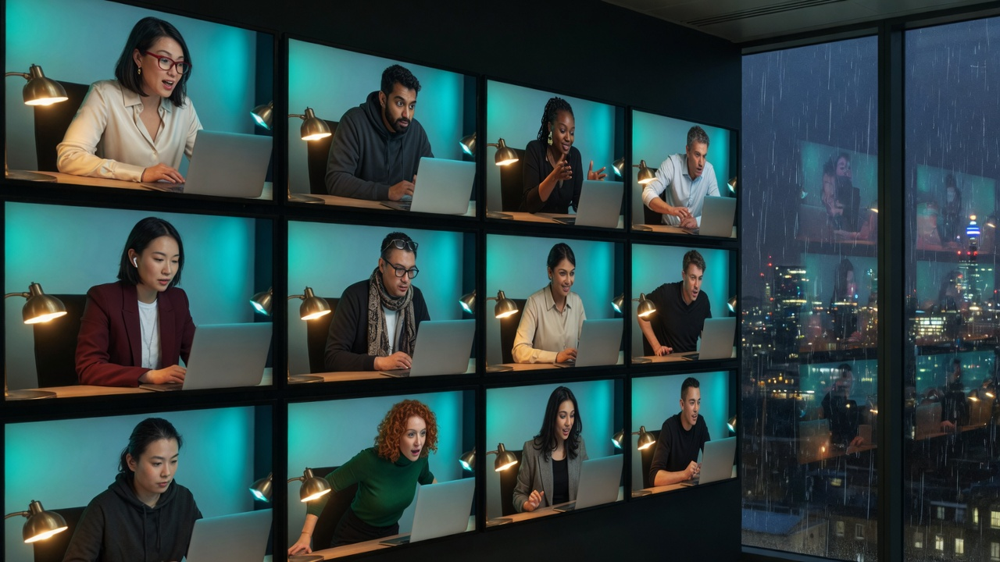
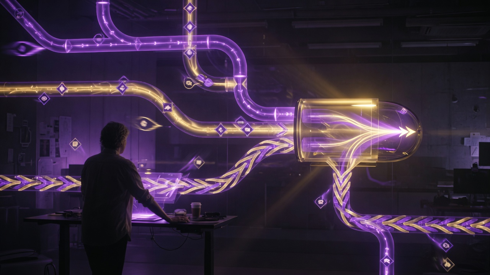
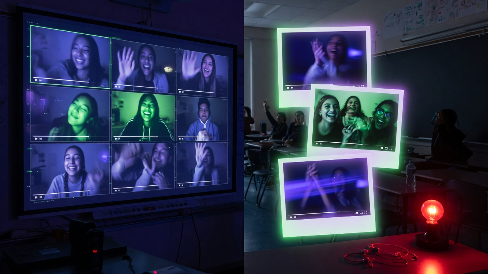

💼 Saturday LinkedIn Cohort Invitations
Post on Saturday. Invite to Sunday 13:30–14:30 London time — never write “Today.” Eight dated posts, 5 Sep → 24 Oct 2026, each with unique copy and a unique visual. Same skeleton as the founder swipe: dated header, clock, London time, live URL, three bullets, recorded-for-Skool closer. This is an organic invite, not a paid enrollment (see H5). $0 Peek / $1 Sit In joins do not count as revenue.
📋 How to post
Ship the invite the day before the lab so the date line can be the Sunday, not “Today.” WhatsApp still fires Sunday 10:00–12:00 UK (daily templates).
Keep the live URL the founder uses. Also paste the group URL first for strangers — /live/ is not a guest pass (Tuncer, skool-live-join).
Download the image, paste the unique copy, post from the Delivery Pilot company page or founder profile. Do not mass-connect (30k cap — VIP Cowork).
Fixed facts every week: Sunday 1:30pm–2:30pm London time · live skool.com/live/cbQK8MDn4FK · join first skool.com/delivery-pilot-8938 · session is recorded for Skool · no exam-pass promise (H8). Clock: 13:30 UK ≈ 18:00 IST ≈ 08:30 US East.
🗓️ Next 8 weeks
| Week | Post Saturday | Lab Sunday | Angle | Jump |
|---|---|---|---|---|
| 1 | 5 Sep 2026 | 6 Sep 2026 | Video grid & peers | Copy |
| 2 | 12 Sep 2026 | 13 Sep 2026 | Metrics & error reduction | Copy |
| 3 | 19 Sep 2026 | 20 Sep 2026 | Custom AI workflows | Copy |
| 4 | 26 Sep 2026 | 27 Sep 2026 | Live delivery coaching | Copy |
| 5 | 3 Oct 2026 | 4 Oct 2026 | Daily status with Claude Cowork | Copy |
| 6 | 10 Oct 2026 | 11 Oct 2026 | Forward Deployed Engineer desk | Copy |
| 7 | 17 Oct 2026 | 18 Oct 2026 | Second Brain execution | Copy |
| 8 | 24 Oct 2026 | 25 Oct 2026 | Live now, replay later | Copy |
✍️ Eight unique invitations
Sunday 6 Sep 2026 — video grid

{kind=link}
Sunday 13 Sep 2026 — metrics & errors
{kind=link}
Sunday 20 Sep 2026 — custom workflows

{kind=link}
Sunday 27 Sep 2026 — delivery coaching
{kind=link}
Sunday 4 Oct 2026 — daily status
{kind=link}
Sunday 11 Oct 2026 — FDE desk
{kind=link}
Sunday 18 Oct 2026 — Second Brain
{kind=link}
Sunday 25 Oct 2026 — live + replay

{kind=link}